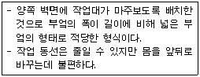

전산응용건축제도기능사 (2012-02-12 기출문제)
1과목: 건축구조
1. 철근 콘크리트 구조의 경사보식 계단에 대한 설명 중 옳지 않은 것은?
- 4변이 지지된 계단으로 본다.
- 좌우벽이나 측보로 지지한다.
- 단방향에는 배력근, 장변방향에는 주근을 배치한다.
- 계단의 너비와 간사이가 큰 경우에 많이 사용된다.
(정답률: 69%)

2. 부재축에 직각으로 설치되는 전단철근의 간격은 철근콘크리트 부재의 경우 최대 얼마 이하로 하여야 하는가?
- 300mm
- 450mm
- 600mm
- 700mm
(정답률: 68%)
3. 다음 재해방지 성능상의 분류 중 지진에 의한 피해를 방지할 수 있는 구조는?
- 방화구조
- 내화구조
- 방공구조
- 내진구조
(정답률: 95%)
4. 보강블록구조에 대한 설명 중 옳지 않은 것은?
- 내력벽의 양이 많을수록 횡력에 대항하는 힘이 커진다.
- 철근은 굵은 것을 조금 넣는 것보다 가는 것을 넣는 것이 좋다.
- 철근의 정착이음은 기초보와 테두리보에 둔다.
- 내력벽의 벽량은 최소 20㎝/㎡ 이상으로 한다.
(정답률: 73%)
5. 목조 벽체에서 기둥 맨 위 처마부분에 수평으로 거는 가로재로서 기둥머리를 고정하는 것은?
- 처마도리
- 샛기둥
- 깔도리
- 꿸대
(정답률: 49%)
6. 2방향 슬래브는 슬래브의 장변이 단변에 대해 길이의 비가 얼마 이하일 때부터 적용할 수 있는가?
- 1/2
- 1
- 2
- 3
(정답률: 77%)
7. 다음 중 철골부재의 용접과 거리가 먼 용어는?
- 윙플레이트
- 엔드탭
- 뒷댐재
- 스캘럽
(정답률: 59%)
8. 벽돌구조에서 통줄눈을 피하는 가장 중요한 이유는?
- 내부구조상 하중의 분산을 위하여
- 외관의 미적 표현을 위하여
- 벽체의 습기 방지를 위하여
- 시공의 편의를 위하여
(정답률: 81%)
9. 다음 중 철골부재접합에 대한 설명으로 옳지 않은 것은?
- 고장력볼트는 상호부재의 마찰력으로 저항한다.
- 용접은 품질관리가 볼트보다 어렵다.
- 메탈터치(metal touch)는 기둥에서 각 부재면을 맞대는 접합방식이다.
- 초음파 탐상법은 사용 방법과 판독이 어려워 거의 사용되지 않고 있다.
(정답률: 65%)
10. 조립식 구조물(P.C)에 대하여 옳게 설명한 것은?
- 슬래브의 주재는 크고 무거워서 P.C로 생산이 불가능하다.
- 접합의 강성을 높이기 위하여 접합부는 공장에서 일체식으로 생산한다.
- P.C는 현장 콘크리트타설에 비해 결과물의 품질이 우수한 편이다.
- P.C는 장비를 사용하므로 공사기기간이 많이 소요된다.
(정답률: 58%)
11. 다음 중 주택에 일반적으로 사용되는 지붕이 아닌 것은?
- 모임지붕
- 박공지붕
- 평지붕
- 톱날지붕
(정답률: 86%)
12. 연속기초라고도 하며 조적조의 벽기초 또는 콘크리트 연속기초로 사용되는 것은?
- 줄기초
- 독립기초
- 온통기초
- 캔틸레버푸딩기초
(정답률: 79%)
13. 콘크리트에서의 최소피복두께의 목적에 해당되지 않는 것은?
- 철근의 부식방지
- 철근의 연성감소
- 철근의 내화
- 철근의 부착
(정답률: 68%)
14. 구조물에 작용하는 외력을 곡면판의 면내력으로 전달시키는 특성을 가진 구조는?
- 절판구조
- 셜(shell)구조
- 현수구조
- 다이아그리드구조
(정답률: 77%)
15. 철골구조의 플레이트 보에서 웨브의 두께가 품에 비해서 얇을 때, 웨브의 국부 좌굴을 방지하기 위해 사용하는 것은?
- 데크플레이트(Deck plate)
- 턴버클(Turn buckle)
- 베니션 블라인드(Venetion blind)
- 스티프너(Stiffener)
(정답률: 80%)
16. 벤딩모멘트나 전단력을 견디게 하기 위해 보 단면을 중앙부의 단면보다 증가시킨 부분은?
- 헌치(hunch)
- 주두(capital)
- 수터럽(stirrup)
- 후프(hoop)
(정답률: 78%)
17. 목재의 이음과 맞춤을 할 때 주의해야 할 사항으로 옳지 않은 것은?
- 이음과 맞춤은 응력이 큰 곳에서 하여야 한다.
- 맞춤면은 정확히 가공하여 거로 밀착되어 빈틈이 없게 한다.
- 공작이 간단하고 튼튼한 접합을 선택하여야 한다.
- 재는 될 수 있는 한 적게 깍아내어 약하게 되지 않도록 한다.
(정답률: 73%)
18. 강구조 트러스에 대한 설명 중 옳지 않은 것은?
- 접합시의 거셋플레이트는 직사각형에 가까운 모양이 좋다.
- 지점의 중심선과 트러스절점의 중심선은 가능한 일치시켜 편심모멘트가 생기지 않도록 한다.
- 현재란 수직으로 배치된 복재를 말한다.
- 지점은 지지점이라고도 하며 트러스가 놓이는 덤을 말한다.
(정답률: 55%)
19. 다음 중 내구적, 방화적이나 횡력과 진동에 약하고 균열이 생기기 쉬운 구조는?
- 철골구조
- 목구조
- 벽돌구조
- 철근콘크리트구조
(정답률: 74%)
20. 다음 중 구조부재를 보호하는 방법으로 옳은 것은?
- 철근콘크리트 기둥의 파손을 방지하기 위하여 내부를 알루미늄을 삽입하였다.
- 서해대교 케이블의 보호를 위하여 염소를 바랐다.
- 목조 지붕틀의 방식을 위하여 광명단을 칠했다.
- 화재로부터 철골부재를 보호하기 위하여 내화뿜칠을 하였다.
(정답률: 69%)
2과목: 건축재료
21. 벽 및 천장재로 사용되는 것으로 강당, 집회장 등의 음향조절용으로 쓰이거나 일반건물의 벽수장재료 사용하여 음향효과를 거둘 수 있는 목재 가공품은?
- 파키트리 패널
- 플로어링 합판
- 코펜하겐 리브
- 파키트리 블록
(정답률: 82%)
22. 아스팔트의 견고성 정도를 침의 관입저항으로 평가하는 방법은?
- 수축율
- 침입도
- 경도
- 갈라짐
(정답률: 75%)
23. 다음 중 시멘트를 구성하는 3대 주성분이 아닌 것은?
- 산화칼슘
- 실리카
- 염화칼슘
- 산화알루미늄
(정답률: 54%)
24. 도료의 원료 중 건조된 도막에 탄성?교착성을 부여함으로써 내구력을 증가시키는 데 쓰이는 것은?
- 가소제
- 용제
- 안료
- 수지
(정답률: 44%)
25. 다음 중 목부에 사용되는 투명도료는?
- 유성페인트
- 클리어래커
- 래커에나멜
- 에나멜페인트
(정답률: 69%)
26. 건축재료의 생산방법에 따른 분류 중 1차적인 천연재료가 아닌 것은?
- 흙
- 모래
- 석재
- 콘크리트
(정답률: 87%)
27. 화력발전소와 같이 미분탄을 연소할 때 석탄재가 고온에 녹은 후 냉각되어 구상이 된 미립분을 혼화재로 사용한 시멘트로서, 콘크리트의 워커빌리티를 좋게 하여 수밀성을 크게 할 수 있는 시멘트는?
- 플라이애쉬 시멘트
- 고로 시멘트
- 백색 포틀랜드 시멘트
- AE 포틀랜드 시멘트
(정답률: 52%)
28. 창유리의 강도란 일반적으로 어떤 것을 말하는가?
- 압축강도
- 인장강도
- 휨강도
- 전단강도
(정답률: 71%)
29. 유리와 같이 어떤 힘에 대한 작은 변형으로도 파괴되는 재료의 성질을 나타내는 용어는?
- 연성
- 전성
- 취성
- 탄성
(정답률: 83%)
30. 목재의 방부제 중 수용성 방부제에 속하는 것은?
- 크레오소트 오일
- 불화소다 2% 용액
- 콜타르
- PCP
(정답률: 69%)
31. 난간벽, 돌림대, 창대, 주두 등에 장식용으로 사용되는 공동(空胴)의 대형 점토 제품은?
- 콘크리트
- 인조석
- 테라죠
- 테라코타
(정답률: 77%)
32. 석고 보드에 대한 다음 설명 중 옳지 않은 것은?
- 부식이 안되고 충해를 받지 않는다.
- 팽창 및 수축의 변형이 크다.
- 흡수로 인한 강도가 현저하게 저하된다.
- 단열성이 높다.
(정답률: 65%)
33. 다음 중 혼합 시멘트에 해당하지 않는 것은?
- 고로 시멘트
- 플라이애시 시멘트
- 포촐란 시멘트
- 중용열 포틀랜드 시멘트
(정답률: 56%)
34. 석회석이 변화되어 결정화한 것으로 실내장식재 또는 조각재로 사용되는 것은?
- 대리석
- 응회암
- 사문암
- 안산암
(정답률: 85%)
35. 철판에 도금하여 양철판으로 쓰이며 음료수용 금속재료의 방식 피복 재료로도 사용되는 금속은?
- 니켈
- 아연
- 주석
- 크롬
(정답률: 56%)
36. 다음 중 콘크리트 보양에 관련된 내용으로 옳지 않은 것은?
- 콘크리트 타설 후 완전히 수화가 되도록 살수 또는 침수시켜 충분하게 물을 공급하고 또 적당한 온도를 유지하는 것이다.
- 콘크리트 비빔 후 습기가 공급되면 재령이 작아지며 강도가 떨어진다.
- 보양온도가 높을수록 수화가 빠르다.
- 보양은 초기 재령 때 강도에 큰 영향을 준다.
(정답률: 50%)
37. 점토제품에서 SK의 번호는 무엇을 나타내는 것인가?
- 제품의 크기를 표시한다.
- 점토의 구성 성분을 표시한다.
- 제품의 용도를 나타낸다.
- 소성온도를 나타낸다.
(정답률: 59%)
38. AE제를 사용한 콘크리트의 특징이 아닌 것은?
- 동결 융해 작용에 대하여 내구성을 갖는다.
- 작업성이 좋아진다.
- 수밀성이 좋아진다.
- 압축강도가 증가한다.
(정답률: 56%)
39. 바닥 재료를 타일로 마감할 때의 내용으로 옳지 않은 것은?
- 접착력을 높이기 위해 타일 뒷면에 요철을 만든다.
- 바닥 타일은 미끄럼 방지를 위해 유약을 사용하지 않는다.
- 보통 클링커타일은 외부바닥용으로 사용한다.
- 외장타일은 내장타일보다 강도가 약하고 흡수율이 높다.
(정답률: 78%)
40. 건축용 접착제가 필히 갖추어야 할 요건이 아닌 것은?
- 접착면의 유동성이 작아야 한다.
- 독성이 없어야 하고 접착강도를 유지해야 한다.
- 진동.충격 등의 반복에 잘 견딜 수 있어야 한다.
- 경화시 체적수축 등의 변형을 일으키지 않아야 한다.
(정답률: 65%)
3과목: 건축계획 및 제도
41. 열의 이동 방법에 해당되지 않는 것은?
- 복사
- 회절
- 전도
- 대류
(정답률: 78%)
42. 건축물의 묘사 및 표현에 관한 설명으로 옳지 않은 것은?
- 건축 도면에 사람을 그려 넣는 목적은 스케일 감을 나타내기 위해서이다.
- 건축 도면에서 수목의 배치와 표현을 통해 건물 주변 대지의 성격을 나타낼 수 있다.
- 여러 선에 의한 건축물의 표현 방법은 선의 간격을 달리함으로 면과 입체를 결정한다.
- 음영을 건축물의 입체적인 표현을 강조하기 위해 그려 넣는 것으로 실시설계도나 시공도에 주로 사용된다.
(정답률: 67%)
43. 주거공간을 주행동에 따라 개인공간, 사회공간, 노동공간 등으로 구분할 때, 다음 중 사회공간에 해당되지 않는 것은?
- 거실
- 식당
- 서재
- 응접실
(정답률: 84%)
44. 건축제도용지 중 A0 용지의 크기는?
- 594x841㎜
- 841x1189㎜
- 1189x1090㎜
- 1099x1200㎜
(정답률: 65%)
45. 직경 13㎜의 이형철근을 200㎜ 간격으로 배치할 때 도면표시 방법으로 옳은 것은?
- D13 #200
- D13 @200
- ?13 #200
- ?13 @200
(정답률: 89%)
46. 소방대 전용 소호전인 송수구를 통하여 실내로 물을 공급하여 소화 활동을 하는 것으로, 지하층의 일반화재 진압 등에 사용되는 소방시설은?
- 드렌처설비
- 연결살수설비
- 스프링쿨러설비
- 옥외소화전설비
(정답률: 64%)
47. 건축도면 중에 평면도에 관한 설명으로 옳은 것은?
- 계획 설계도에 해당된다.
- 실의 배치 및 크기가 표현된다.
- 건축물의 외관을 나타내는 직립투상도이다.
- 천장 높이, 지붕물매, 처마길이 등이 표현된다.
(정답률: 68%)
48. 건축도면에서 굵은 실선으로 표시하여야 하는 것은?
- 해칭선
- 절단선
- 단면선
- 치수선
(정답률: 85%)
49. 부엌과 식당을 겸용하는 다이닝 키친(dining kitchen)의 가장 큰 장점은?
- 침식분리가 가능하다.
- 주부의 동선이 단축된다.
- 휴식, 접대 장소로 유리하다.
- 이상적인 식사 분위기 조성에 유리하다.
(정답률: 86%)
50. 전개도에 표현되는 사항에 해당되지 않는 것은?
- 반자 높이
- 가구의 입면
- 기초의 형태
- 걸레받이 형태
(정답률: 44%)
51. 전압의 종류에서 저압에 해당하는 기준은?
- 직류 100V 이하, 교류 220V 이하
- 직류 350V 이하, 교류 420V 이하
- 직류 750V 이하, 교류 600V 이하
- 직류 900V 이하, 교류 1000V 이하
(정답률: 58%)
52. 배수트랩의 봉수 파괴 원인과 가장 거리가 먼 것은?
- 증발
- 통기 작용
- 모세관 현상
- 자기 사이펀 작용
(정답률: 61%)
53. 건축물의 묘사에 있어서 묘사 도구로 사용하는 연필에 관한 설명으로 옳지 않은 것은?
- 다양한 질감 표현이 가능하다.
- 밝고 어두움의 명암 표현이 불가능하다.
- 지울 수 있으나 번지거나 더러워질 수 있다.
- 심의 종류에 따라서 무른 것과 딱딱한 것으로 나눠진다.
(정답률: 86%)
54. 증기난방에 관한 설명으로 옳지 않은 것은?
- 예열시간이 온수난방에 비해 짧다.
- 난방의 쾌감도가 온수난방보다 높다
- 방열면적을 온수난방보다 작게 할 수 있다.
- 증발잠열을 이용하기 때문에 열의 운반능력이 크다.
(정답률: 70%)
55. 다음의 건축물의 생산과정 중 가장 마지막 단계는?
- 시공
- 기획
- 제도
- 설계
(정답률: 89%)
56. 실내 색채 계획에 관한 설명으로 옳지 않은 것은?
- 주가 되는 색을 명확히 선정한다.
- 사용되는 색의 수는 되도록 많게 한다.
- 각 실의 위치, 밝기, 조명 등의 영향을 고려한다.
- 색의 팽창과 수축성에 따른 실의 확대, 축소감에 유의한다.
(정답률: 88%)
57. 대지면적에 대한 건축면적의 비율을 의미하는 것은?
- 용적률
- 건폐율
- 점유율
- 수용률
(정답률: 63%)
58. 계단실(홀)형 아파트에 관한 설명으로 옳지 않은 것은?
- 프라이버시 확보가 좋다.
- 동선이 짧아 출입이 용이하다.
- 엘리베이터 효율이 가장 우수하다.
- 통행 부분(공용 면적)의 면적이 작다.
(정답률: 71%)
59. 주거 단지의 단위 중 초등학교를 중심으로 한 단위는?
- 근린지구
- 인보구
- 근린분구
- 근린주구
(정답률: 72%)
60. 다음 설명에 알맞은 부엌 가구의 배치 유형은?

- 일자형
- L자형
- 병렬형
- 아일랜드형
(정답률: 86%)
이유는 단방향으로 보면 계단의 하중이 주로 수직 방향으로 작용하기 때문에 배력근을 배치하여 수평적인 힘을 받아들이고, 장변방향으로는 주로 수평적인 힘이 작용하기 때문에 주근을 배치하여 수직적인 하중을 받아들이기 때문입니다.